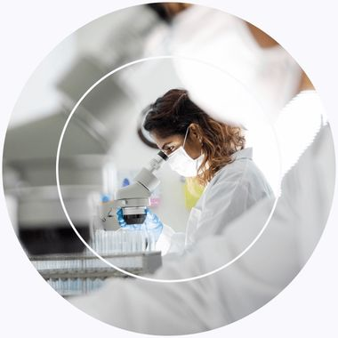
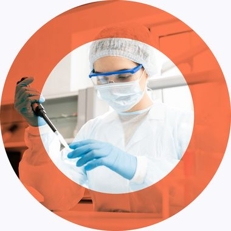
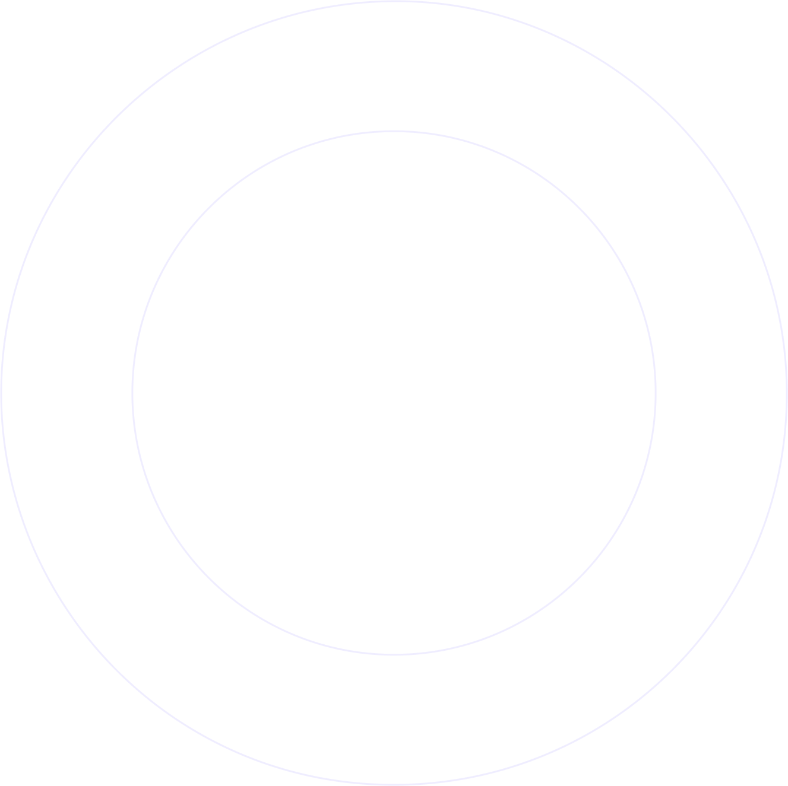

A clinical-stage biotechnology company with two investigational programs: SCY-770 for ADPKD and SCY-247, an antifungal now supported by a BARDA contract.
$214M
Potential BARDA funding if all options are exercised
2029
Expected cash runway

Lead program · SCY-770

Fungerps: our anti-fungal platform

Cash is expected to fund operations into 2029. The BARDA contract is not expected to change SCY-770 plans or that runway.
$71.1M
Cash & investments, 6/30/26
~$18.5M
BARDA initial base period
Q4 2026
SCY-770 Phase 2 planned
Forward-looking statements on BARDA options, trial timing and cash runway. SCY-770 and SCY-247 are investigational, not FDA-approved. See SEC filings.